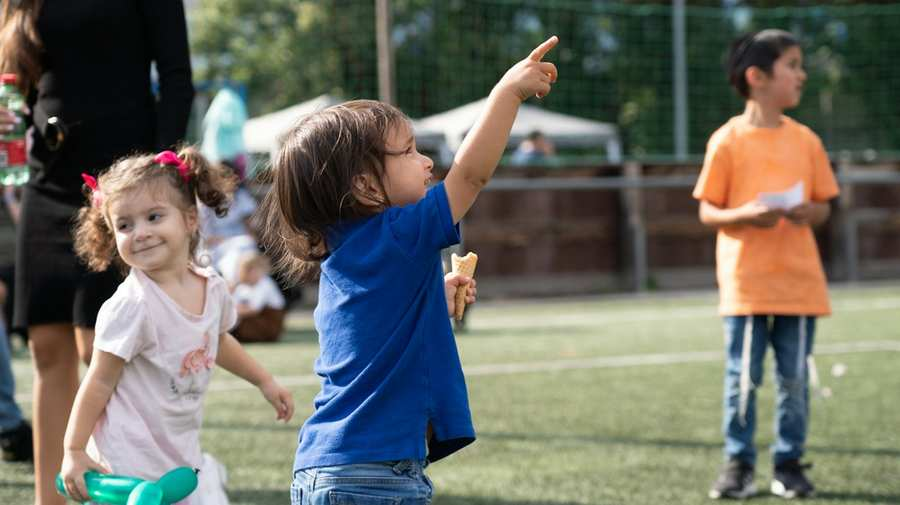
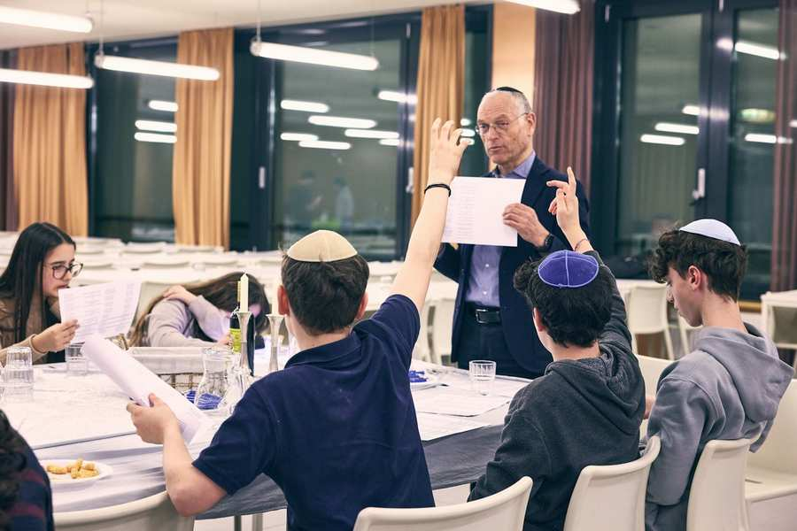

הצעות לילדים ולנוער
בית הספר היהודי צבי פרס חיות:
בית הספר היהודי ע״ש צבי פרץ חיות (ZPC) הוא מוסד חינוכי פרטי של הקהילה היהודית בווינה, המלווה ילדים מגיל שנה וחצי ועד סיום התיכון, ומפוקח ומאושר על ידי משרד החינוך האוסטרי.
המתחם כולל גני ילדים, בית ספר יסודי ותיכון, ומשלב חינוך כללי ברמה גבוהה עם חינוך יהודי־ציוני, לימודי עברית, מסורת והיסטוריה יהודית. שפת ההוראה היא גרמנית, לצד חיזוק הקשר לישראל ולזהות היהודית. בית הספר שם דגש על מצוינות לימודית, ערכים, קהילה ומעורבות חברתית, ומעניק לתלמידיו הכנה מלאה לבגרות ולהמשך לימודים אקדמיים. לקריאה נוספת על בית הספר והרשמה:
תנועות וארגוני נוער יהודיות בוינה:
בני עקיבא:
השומר הצעיר:
Hashomer Hatzair in Österreich | Wien
מועדון חי:
אגודת הסטודנטים היהודים:
About – Jüdische österreichische Hochschüler:innen
יד ביד:
Jad Bejad Jugendzentrum | Facebook
BBYO:
מועדון בר ובת מצווה:

מועדון בר ובת מצווה (BBMC) של הקהילה היהודית בווינה הוא תוכנית נוער לילדים המתכוננים לחגוג את בר או בת המצווה שלהם (גילאי 12–13).
המועדון מקיים מפגשים חודשיים, סדנאות, טיולים, ופעילויות מהנות שמסייעות למשתתפים לחקור את זהותם היהודית, מסורתם, הקהילה והשורשים האישיים שלהם, תוך יצירת חברויות חדשות והנאה מחוויות מרתקות. המועדון כולל תוכנית לימודית מובנית ומעשירה שנועדה להפוך את מסע ההתבגרות למשמעותי ובלתי נשכח.
דמי השתתפות: תרומה להוצאות בסך 100 € )מלגות אפשריות לפי בקשה(
פרטים נוספים והרשמה:
bbmc@ikg-wien.at
פרויקטים
Next Step
היא תכנית הכשרה בינלאומית לצעירים יהודים בגילאי 25–35, המעניקה כלים לניהול, מנהיגות ופיתוח מקצועי. המשתתפים, הנבחרים מאוסטריה, גרמניה ושווייץ, נפגשים בקורסים במדינתם ובערים אירופאיות נוספות, משתפים ניסיון ומחזקים את הרשתות החברתיות והמקצועיות שלהם. מטרת התכנית היא לאפשר למשתתפים ליישם את הידע בקהילותיהם בתפקידים מקצועיים או התנדבותיים. הקהילה היהודית של וינה מממנת את ההכשרה, הלינה, הארוחות וחלק מהנסיעות.
לפרטים נוספים על התכנית והרשמה צרו איתנו קשר בכתובת: jugend@ikg-wien.at
פרויקט "תודה"
פרויקט של מחלקת הנוער להבעת תודה לאנשים מחיי היומיום.
פרויקט הנוער „תודה“ נועד לעודד צעירים להכיר ולהעריך את האנשים והמוסדות הפועלים למען הקהילה היהודית ועיריית וינה. במסגרת הפרויקט בוחרות תנועות הנוער מדי שנה מוסדות יהודיים ולא־יהודיים, לומדות על פעילותם, מכינות מתנה מעשה ידיהן ומעניקות אותה כהבעת תודה והוקרה.
לקראת – LIKRAT

על תכנית "לקראת": תכנית "לקראת" היא תכנית הכשרה לצעירים יהודים בגילאי 14–18, המעניקה ידע ומיומנויות בתחומי דת, ישראל, היסטוריה יהודית, השואה, רטוריקה ותקשורת. לאחר ההכשרה, משתתפים מבקרים בבתי ספר ומנהלים דיאלוג פתוח עם תלמידים לא־יהודים על יהדות, במטרה לשבור סטריאוטיפים ודעות קדומות. באמצעות שיטת ה־“Peer to Peer” התכנית יוצרת בסיס משותף ומקדמת הבנה וכבוד הדדי. מטרתה להתמודד עם אנטישמיות, לקדם שוויון ולהעניק הצצה לחיי היומיום של צעירים יהודים.
התכנית הוכיחה הצלחה גבוהה: 93% מהתלמידים ממליצים עליה לאחר השתתפות.
גמ"ח – הארון הקהילתי
מה עושים עם פריטי הילדים הישנים? תרמו אותם לגמ"ח של הקהילה ומצאו גם אתם פריטים שימושיים בתמורה!
מה ניתן להחליף? ביגוד עד מידה 36/38 משחקים עגלות אופניים
חנות הגמ"ח פתוחה בכל יום ראשון בין השעות 10:00–12:00 בבוקר, ברובע השני.
במידה ויום ראשון חל בחג יהודי – ניתן להגיע גם בתיאום אישי.
למידע נוסף, ניתן ליצור קשר בטלפון +43 676-510 50 06 או לפנות לוועדת הנוער של IKG וינה בכתובת הדוא״ל הבאה: